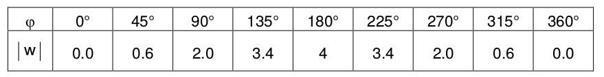

Aufgabe II.8
Man fülle die Wertetabelle aus und übertrage die Punktepaare $(|w|,\varphi)$ ins Koordinatensystem.
- Die Tabelle zeigt vermutlich Punkte auf einem speziellen Weg.
- Berechnen Sie für jeden $z$-Wert den entsprechenden $w = z^2$.
- Tragen Sie $(|w|, \arg(w))$ in ein Polarkoordinatensystem ein.
- Achten Sie auf Muster in der entstehenden Kurve.

Vorgehen beim Ausfüllen der Tabelle:
Für jeden Wert $z$ in der Tabelle:
- Berechne $w = z^2$
- Bestimme $|w| = |z|^2$
- Bestimme $\arg(w) = 2\arg(z)$ (modulo $360°$)
- Trage $(|w|, \varphi)$ ins Koordinatensystem ein
Interpretation:
Die entstehende Kurve zeigt, wie sich der Betrag in Abhängigkeit vom Winkel ändert. Je nach gewähltem Ausgangsweg für $z$ entstehen verschiedene charakteristische Kurven.
Im Video: Etappe 5 · Verschobener Einheitskreis bei 10:50